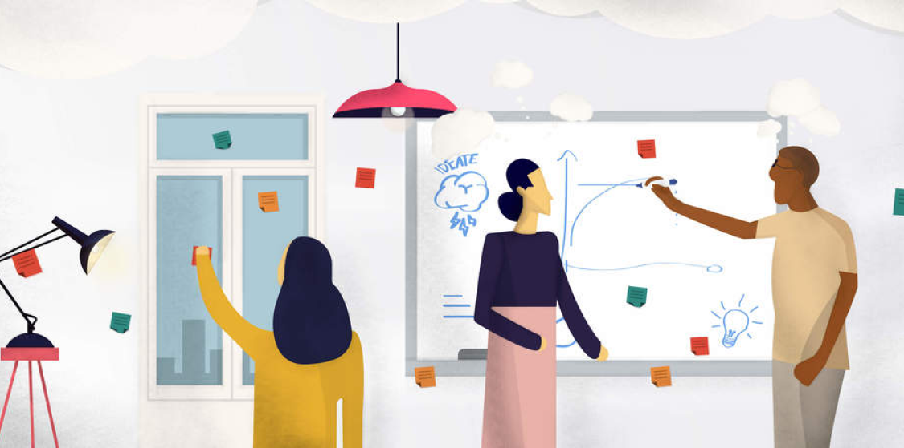
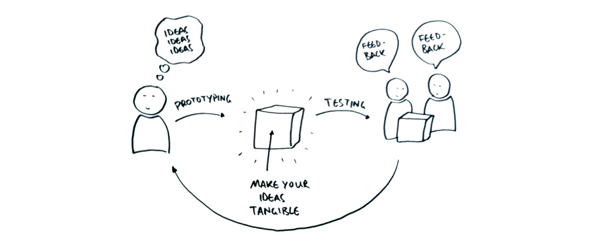
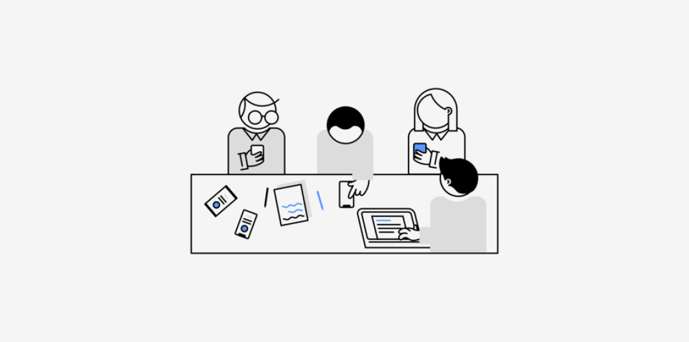

Empathize
Empathy is crucial to design thinking process, it allows you to set aside, bias judgements, assumptions and lets you gain insight into understanding the context of the problem you are trying to solve.
In many cases this context may exist outside your world there causing you to have information either based on hearsay, secondary research, news broadcasts and social media updates.
It is therefore necessay to see through the eyes of context, experience and 1st hand research in order to understand users and their needs.
Empathy encompasses what the users say as oppose to what they think, do and feel, this allows you not only to design for the users pain but also to underwhat they need.
Often times users think they know what they need this is why this map is not to ask for thier need but to actually discover what they need.
Define
What is the Problem?
Who is the Problem for?
How significant is the Problem?
What’s unique about your approach?
This is where you will analyse your observations and synthesise them in order to define the core problems that you and your team have identified up to this point. You should seek to define the problem as a problem statement in a human-centred manner.
Ideate
"think outside the box" to identify new solutions to the problem statement you’ve created, and you can start to look for alternative ways of viewing the problem. There are hundreds of Ideation techniques such as Brainstorm, Brainwrite, Worst Possible Idea, and SCAMPER. Brainstorm and Worst Possible Idea sessions are typically used to stimulate free thinking and to expand the problem space. It is important to get as many ideas or problem solutions as possible at the beginning of the Ideation phase. You should pick some other Ideation techniques by the end of the Ideation phase to help you investigate and test your ideas so you can find the best way to either solve a problem or provide the elements required to circumvent it.
Prototype
It is to design and model a prototype to further gain insight and have a clearer view of how real users would behave, think, and feel when interacting with the end product.
Test
In this stage we rigorously test the complete product using the best solutions identified during the prototyping phase. This is the final stage of the 5 stage-model, however an iterative process, the results generated during the testing phase are often used to redefine one or more problems and inform the understanding of the users, the conditions of use, how people think, behave, and feel, and to empathise. Even during this phase, alterations and refinements are made in order to rule out problem solutions and derive as deep an understanding of the product and its users as possible.